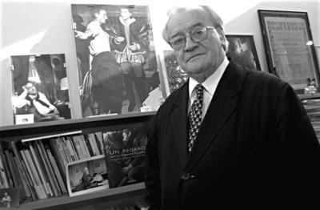
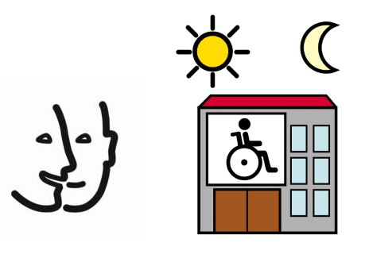
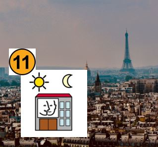

L'association
L'association a été créée le 7 février 1969 par Monsieur le Sénateur Jean Chérioux. Il a été son Président jusqu’en 2016.
La Protection Sociale de Vaugirard s'occupe d'établissements qui accompagnent les enfants, adolescents et adultes handicapés mentaux.
L’Association La Protection Sociale de Vaugirard – Jean Chérioux dispose de 11 établissements médico-sociaux à Paris et dans les Hauts de Seine.
